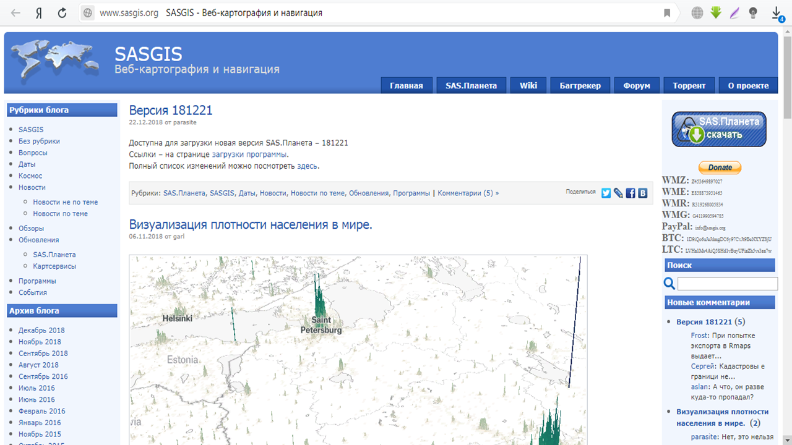
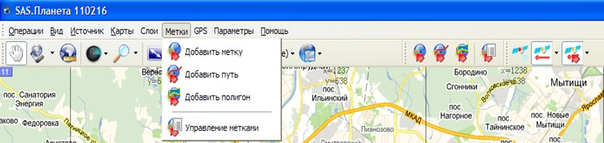
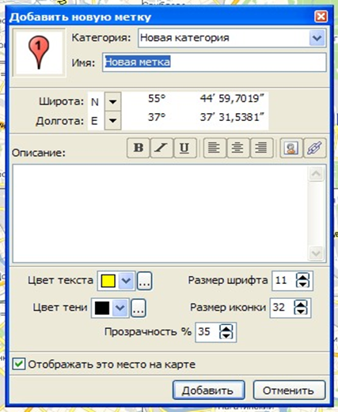
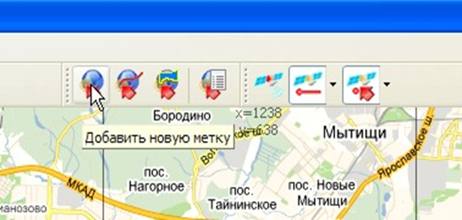
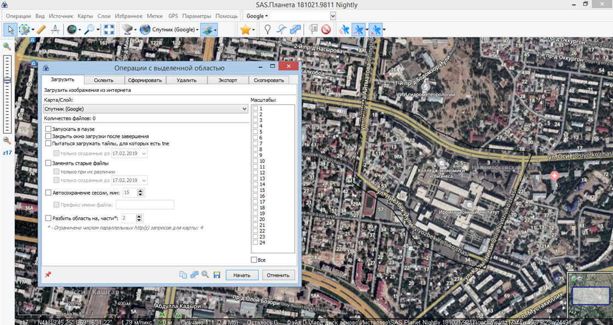
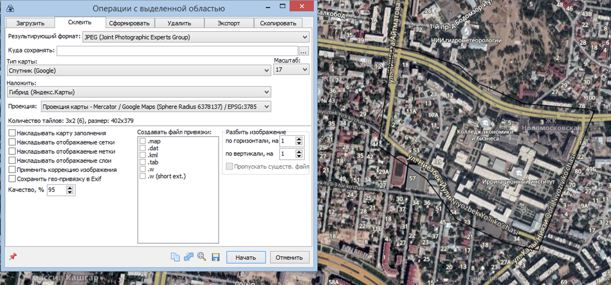
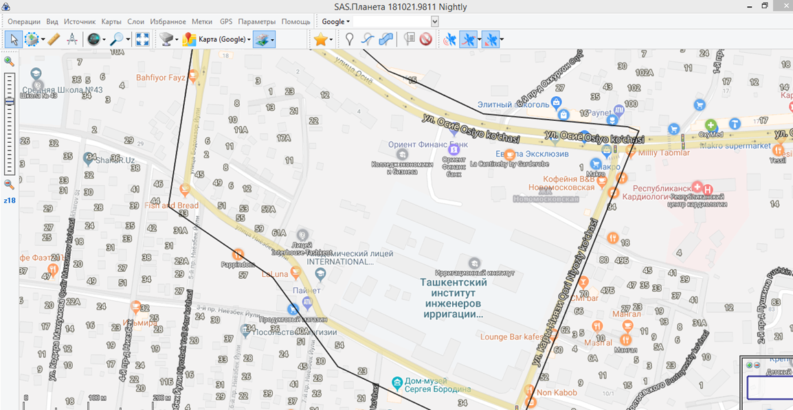
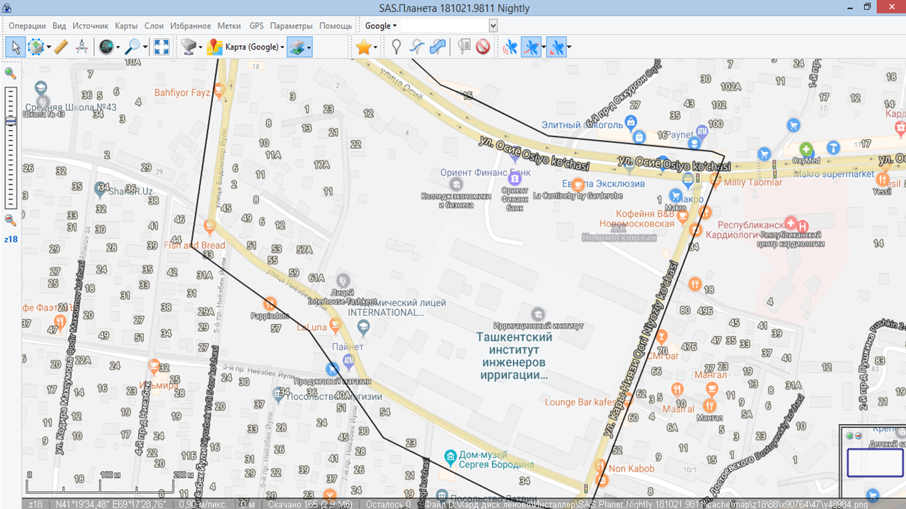
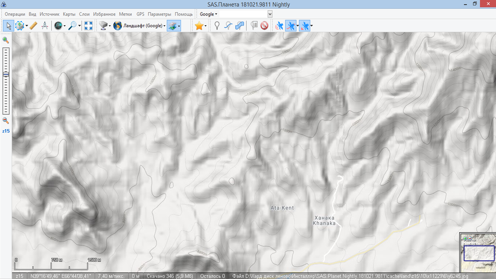

Мавзу: SASPlaneta дастури ёрдамида космосуратлар координаталарини аниқлаш
Reja.
1. SASPlanet dasturini yuklab olish
2. SASPlanet dasturida belgilarni qo`yish va eksport qilish
3. SASPlanet dasturida kosmosuratlarni yuklab olish
4. SASPlanet dasturi relefli modellari va gobridlar
SAS.Planet (SASPlanet) Google Earth, Google Maps, DigitalGlobe, Cosmosnimki, Yandex.Maps,
Yahoo! tomonidan taqdim etilgan yuqori aniqlikdagi va an'anaviy xaritalardagi kompyuter
sun'iy yo'ldosh rasmlarini ko'rish va yuklab olish uchun mo'ljallangan dastur hisoblanadi.
Xaritalar, VirtualEarth, Gurtam, OpenStreetMap, eAtlas, iPhone xaritalari, Bosh shtab
xaritalari va h.k. Barcha yuklab olingan xaritalar kompyuteringizda qoladi va ularni
internet aloqasiz ham ko'rishingiz mumkin. Sun'iy yo'ldosh xaritalaridan tashqari, siyosiy,
landshaft va birlashgan xaritalar bilan, shuningdek, Oy va Mars xaritalari bilan ishlash
mumkin.
SAS Planet dasturini yuklab olish uchun sasgis.org saytiga kiriladi. Sakachat SAS
Planet
buyrug`i yordamida yuklab olish mumkin bo`ladi. Yuklab olingan fayl zip formatida bo`ladi.

Asosiy vazifalar
Ko'rish va yuklab olishdan tashqari dastur quyidagi foydali funktsiyalarga ega:
Tadqiqot xaritasi - Siz ko'rib turgan joyning manzilini osongina topishingiz hamda
xaritadagi har qanday boshqa joyga tezda borishingiz mumkin;
xaritani to'liq ekran rejimida ko'rish - ayniqsa, past ekran o'lchamlari uchun qulay;
avvalgi barcha qatlamlarning bir qatlamidan ayirboshlash - Internet-trafikni sezilarli
darajada qisqartiradi, masalan, siz shaharni 18-chizmada yuklab olishingiz va undan avvalgi
barchalarini yaratishingiz mumkin;
Xaritalarni iPhone xaritalari tomonidan qo'llab-quvvatlanadigan formatda eksport qilish
qobiliyati;
Xaritalarni 3-versiyaning mobil Yandex.Maps tomonidan qo'llab-quvvatlanadigan formatda
eksport qilish qobiliyati;
Garm navigatorlari tomonidan qo'llab-quvvatlanadigan raster xaritalarni JNX formatiga
eksport qilish qobiliyati;
Wikimapiya ob'ektlarini yuklash va ko'rsatish;
Google va Yandex yordamida qidirish joylari;
maxsus xaritalar qo'shish.
GPS qabul qiluvchi bilan ishlash;
marshrutlarni joylashtirish;
masofani o'lchash;
KML fayllarini aks ettirish;
Panoramio-quvvatlash xizmati;
qatlamlik xaritasini yaratish - bu funksiya sizga keshda yuklangan va aksincha, sizda
yo'q xaritalarni ko'rish imkonini beradi;
Xaritaning bir qismini har qanday grafik muharririda ko'rishingiz va qayta ishlashingiz,
shuningdek, boshqa GIS ilovalaridan foydalanishingiz mumkin, masalan, OziExplorer (ushbu
dastur uchun majburiy fayl yaratadigan) bir qismini saqlash;
siz qiziqqan joylarni sizga saqlashingiz va keyinchalik ularni muammosiz topa
olishingiz va
ularni har doim xaritada ko'rishingiz mumkin;
Metka yaratish: SAS dasturida teglar. Teglar nuqtali moslamalarni, ko'pburchaklarni,
yo'llarni va treklarni o'z ichiga oladi. Bu ma'lumotlar bazasida teglarni saqlashga bog'liq.
Dastur nuqta teglar, yo'llar va ko'pburchaklarni yaratish qobiliyatini ta'minlaydi.
Buning uchun Bookmark Tagsga kiriladi.

Metka qo'shish - yangi nuqta yorlig'i qo'shimchalar. Ushbu vositani tanlagandan so'ng,
xaritada kerakli joyga chap sichqoncha tugmasini bosing va keyinchalik sanasi tahrirlash
oynasi paydo bo'ladi.

Ushbu oynada quyidagilar ko'rsatiladi:
Bu tegga tayinlangan belgilar;
Yangi yaratilgan tegga tegishli teglar turkumi. Ichki bo'limlarni yaratish mumkin,
buning
uchun "toifa" maydonida har bir filialni kiritish kerak, masalan, "\" bilan ajratilgan,
masalan "2010 \ 11".
tovar nomini;
etiketning geografik koordinatalari (avtomatik ravishda belgilanadi);
matn rangi;
shrift hajmi;
belgining hajmi;
shaffoflik;
Xaritadagi belgining ko'rinishi.
Qo'shish tugmasini bosgandan so'ng yaratiladi. Bekor qilish tugmasi yangi yorliq
yaratilishini bekor qiladi.
Yangi kirish asbobini qo'shish orqali yangi teg qo'shishingiz mumkin:

Chiziq qo'shish - yangi yo'l qo'shish. Ushbu vositani tanlagandan so'ng, asfaltlangan
yo'lning nuqtalarini ko'rsatish uchun chap sichqonchani bosing. Ikkinchi nuqtani
bildirgandan so'ng, ekranda kichik oyna paydo bo'ladi:
kiritilgan so'nggi nuqtani (qizil o'q) o'chirish;
yo'lni saqlang (floppi bilan belgi);
avtomatik ravishda Internet-xizmatlar orqali yo'lni ochish (tasdiqlash qutilari
belgisi).




